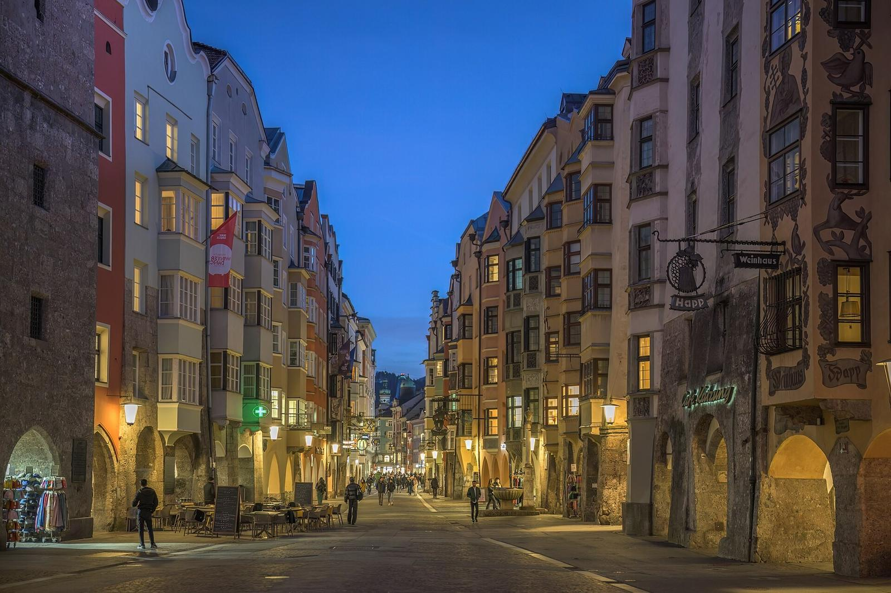
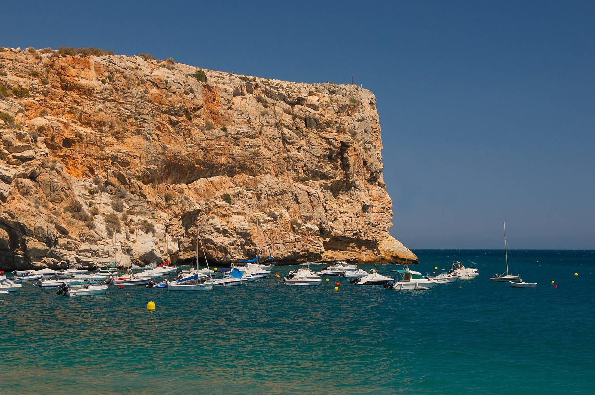
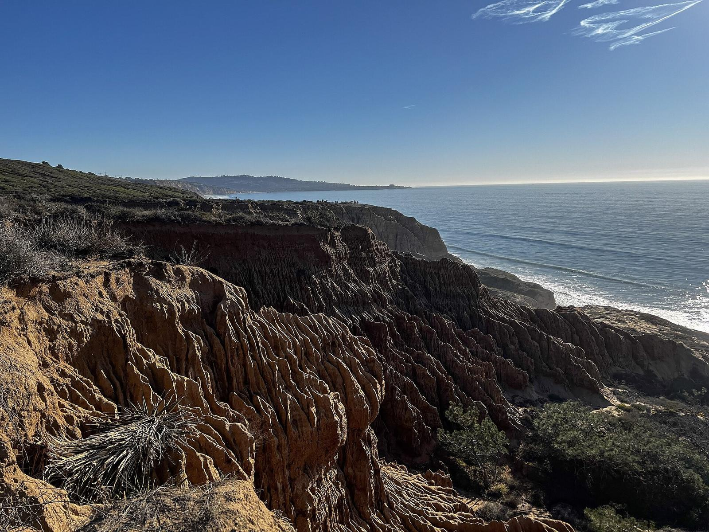
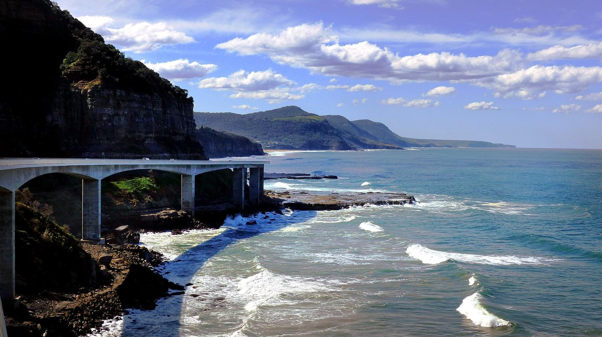
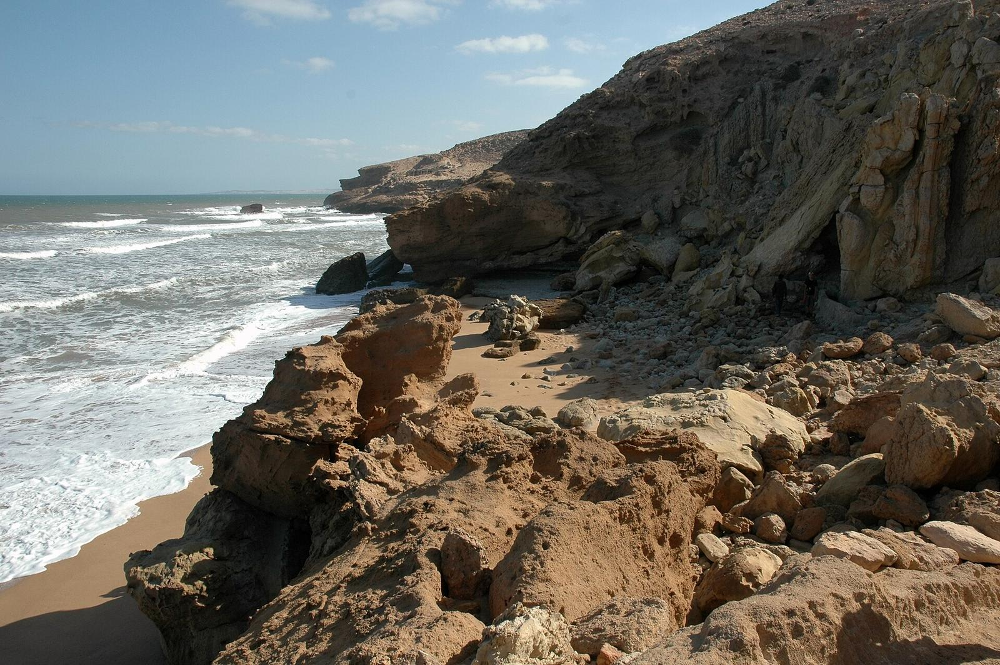

{{SITE}}
les photos du voyage
Accueil
Photos
Journal
À propos

la ruelle aux lanternes
la grotte bleue
un concert pour nous seuls

la falaise rouge

le bout du monde

la route du littoral
le marché couvert
la baie verte

marée haute